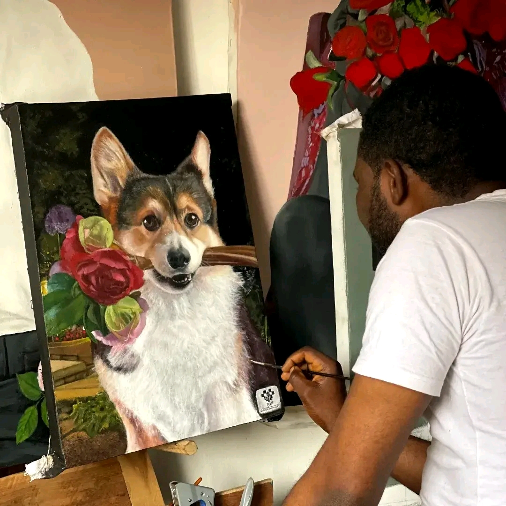
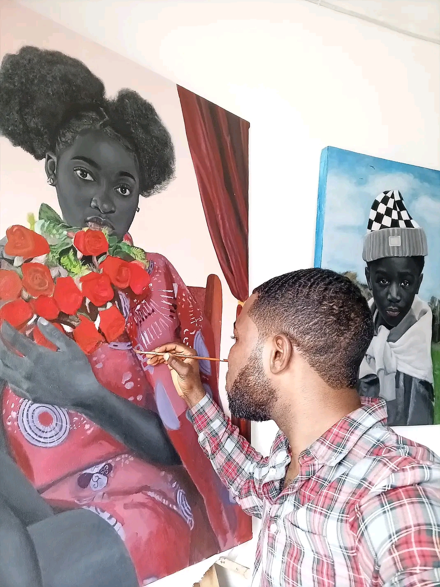

Each work is developed through patience, precision, and intentional stillness. Nothing is accidental. The quality a collector holds in their hands began long before the first stroke.


Every painting starts with a long period of thinking. There is no rushing to the canvas. The idea has to settle, to breathe, before any brush makes contact. Most of what happens in a painting has already happened in the mind, through observation, through sitting with a feeling long enough to understand what it is really about.
Once the idea is clear, the preparation begins. The canvas is treated, the palette is arranged deliberately, and the composition is sketched in the lightest possible line. Nothing is accidental. Every element has a reason for being where it is.
The painting is built in layers. The first layers establish form and shadow. The middle layers develop tone and depth. The final layers bring life, the small details that make a face feel present, that make roses feel soft, that make the black and white of a chessboard carry weight.
The work is slow. Not because it has to be, but because speed takes away the feeling. A painting that was rushed will always look rushed, and the people who stand in front of it will feel that without knowing why. Slowness is not a limitation. It is the work itself.
The canvas is where silence becomes visible. What a collector receives is not simply a painting. It is the record of a moment that cannot be repeated.
These are investment-grade originals for serious collectors. Each work ships worldwide with professional art handling, full insurance, and a hand-signed certificate of authenticity. Once acquired, it leaves the collection permanently. Inquiries are handled with care and full discretion.
Join a private list of collectors and gallery professionals. Be among the first to know when new works are released and original pieces become available for acquisition before they reach the public.
Private. No spam. Unsubscribe anytime.